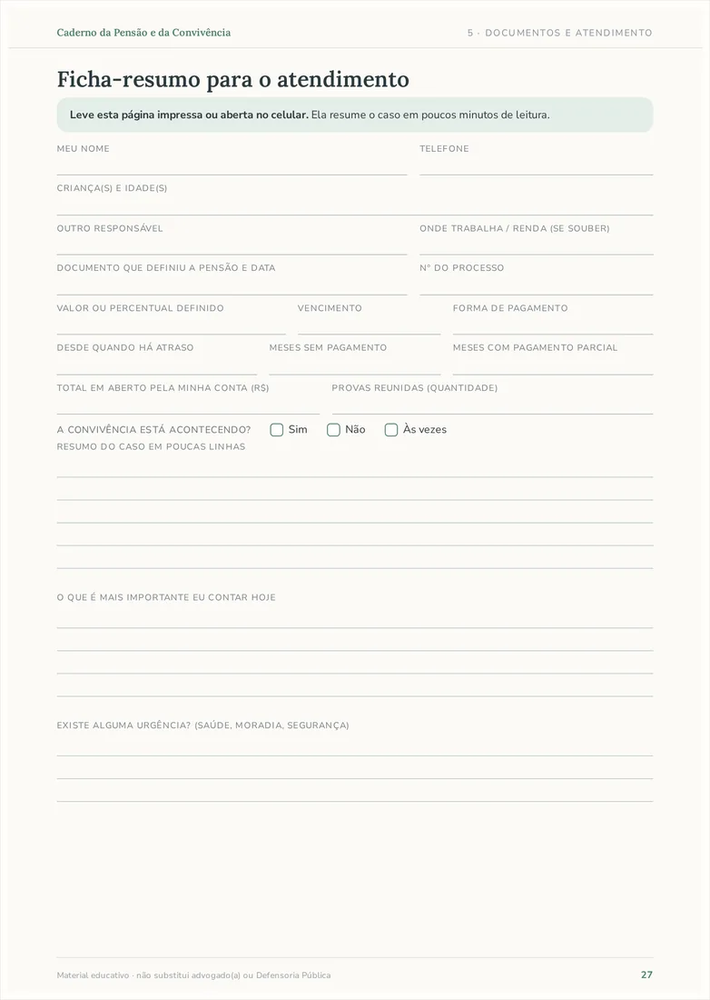
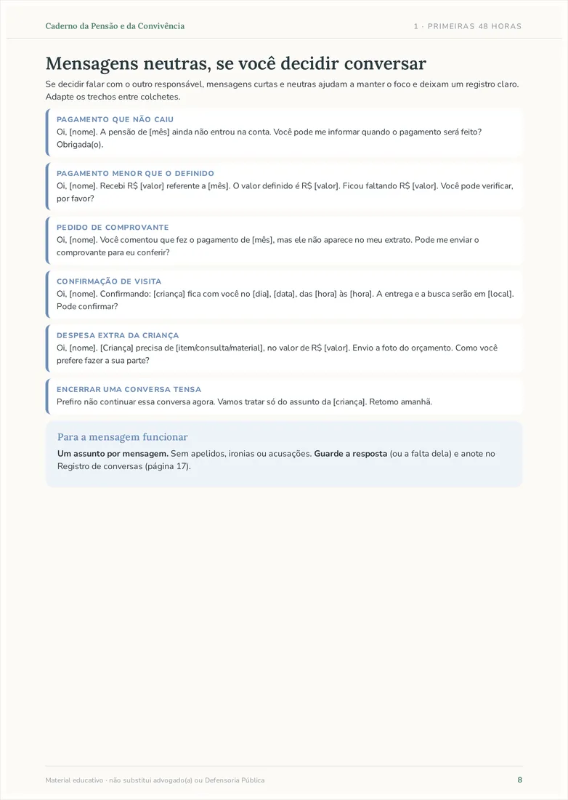
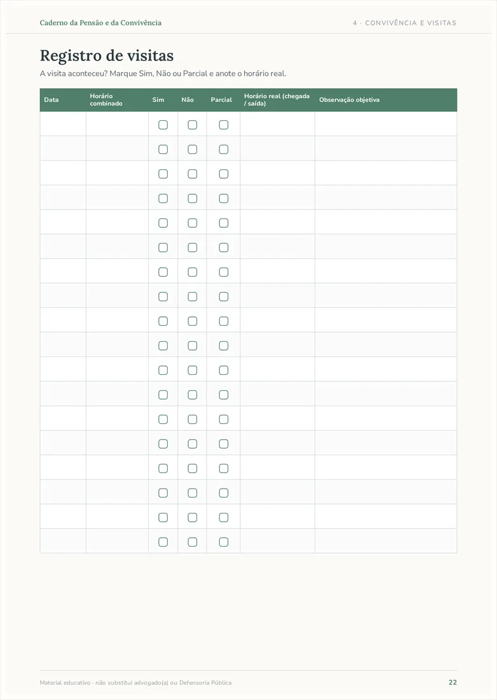

Pagamentos que não batem
Qual mês ficou pendente? O que foi pago? Em qual data?
Seu material pronto para preencher · 29 páginas
Chega de procurar prints e tentar lembrar datas. Tenha um caderno de 29 páginas para registrar pagamentos, atrasos, gastos, documentos e convivência — no celular ou impresso.
Pagamento único · PDF enviado por e-mail após confirmação · garantia de 7 dias

Olhe por dentro antes de decidir
Veja páginas reais do caderno: campos para preencher, tabelas e checklists. Sem depender só de uma capa bonita.







Checklists de início, plano para os próximos dias e mensagens neutras.
Registros mensais de valores previstos, pagos e pendentes.
Índice de prints, conversas, documentos e gastos da criança.
Anotações objetivas sobre visitas, horários e combinados.
Checklist, protocolos, ficha-resumo e perguntas para levar.
Gostou do que viu? Receba o caderno completo por pagamento único.
Quero as 29 páginas por R$ 19,90 PDF digital · acesso por e-mail após a confirmação da compraVocê reconhece essa situação?
Um comprovante na galeria, uma mensagem no WhatsApp, datas perdidas e gastos que ficaram sem registro.
Qual mês ficou pendente? O que foi pago? Em qual data?
Prints, extratos, recibos e mensagens difíceis de localizar.
Chega a hora de buscar orientação e fica difícil explicar a sequência dos fatos.
Você não precisa começar do zero com uma folha em branco.
Quero começar com o caderno pronto →
Um material que você realmente usa
Você pode preencher no celular usando um leitor de PDF compatível ou imprimir as páginas em A4.
Simples de usar
Após a confirmação da compra, o arquivo é enviado para o e-mail informado.
Use um leitor de PDF compatível no celular ou computador, ou preencha à mão.
Siga as primeiras etapas, registre o que aconteceu e prepare seus documentos.
Pagamento único. Sem assinatura.
O que hoje está espalhado pode ficar registrado, mês a mês, num só caderno.
Acesso ao material completo
Acesso ao PDF de 29 páginas, pronto para consultar, preencher e imprimir.
Material digital para uso pessoal.
Preenchível no celular ou no computador e pronto para imprimir.
Pagamento único R$ 19,90Uma vez só. Sem mensalidade.
Você será direcionado ao checkout da Wiven · acesso por e-mail após pagamento confirmado
Se o material não for o que você esperava, solicite o reembolso dentro do prazo de 7 dias.
No checkout, podem aparecer materiais complementares opcionais. Eles não são necessários para comprar o caderno principal.
Antes de comprar
Depois da confirmação do pagamento, o PDF é enviado para o e-mail informado na compra. Confira também spam e promoções.
Sim, usando um aplicativo leitor de PDF com suporte a formulários, como o Adobe Acrobat Reader. Se o visualizador não permitir edição, abra em outro leitor ou imprima.
Sim. O arquivo é em tamanho A4 e pode ser impresso para uso pessoal.
O caderno também ajuda a organizar gastos e convivência. Para pedir a fixação da pensão, procure orientação de advogado(a) ou da Defensoria Pública.
Não. É um material educativo e de organização, não um serviço jurídico. Ele não substitui a orientação profissional nem garante resultado judicial.
Para dúvidas de acesso ao PDF, entre em contato no WhatsApp (22) 98138-3963. O suporte não presta orientação jurídica.